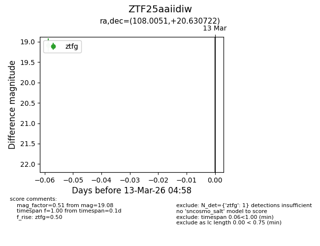
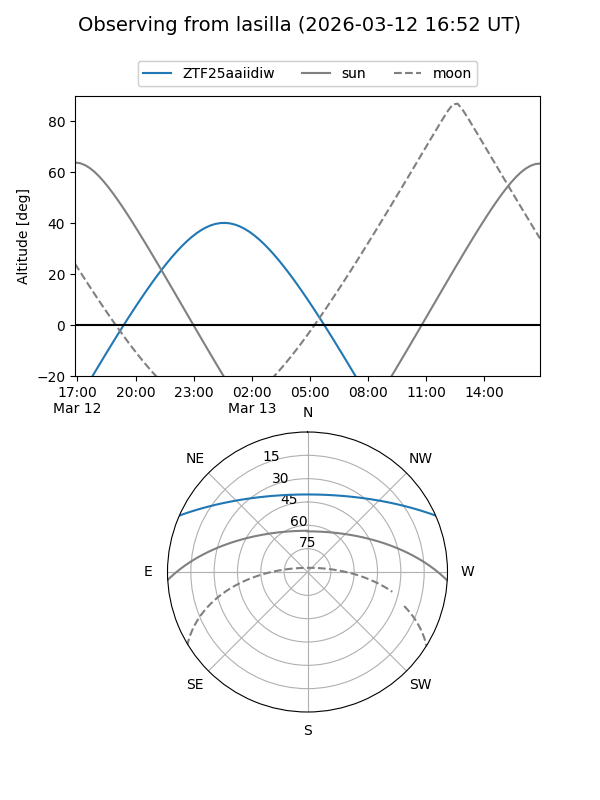
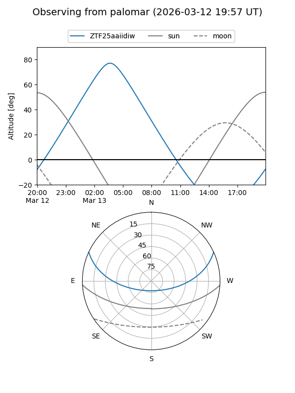

ZTF25aaiidiw
Target ZTF25aaiidiw at 2026-03-13 04:59
Aliases and brokers:
FINK: link
Lasair: link
ALeRCE: link
alt names
ZTF25aaiidiw (ztf,fink_ztf)
Coordinates:
equatorial (ra, dec) = 108.0051,+20.63072
equatorial (HMS+DMS) = 07:12:01.22,+20:37:50.60
galactic (l, b) = (196.4767,+13.61310)
Flags:
Photometry:
last ztfg=19.08
1 ztfg detections
Lightcurve

Visibility


Additional plots